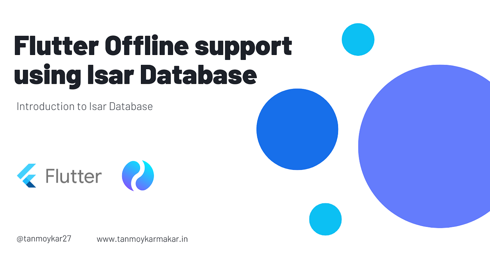

Offline-First Flutter: Delivering Resilience in 2026

In the modern world, users have zero patience for "Loading..." screens. They expect your app to work instantly, whether they're in a high-speed fiber zone or a rural dead spot. At Sarankar Developers, we advocate for an "Offline-First" approach. This means the app is designed to work without network connectivity, with data synchronization happening in the background when a connection becomes available.
Here's our roadmap to implementing robust offline support in your Flutter applications in 2026.
1. The Persistence Layer: Hive vs. SQFlite vs. Isar
Choosing the right database is the foundation of offline support. Unlike web apps, mobile apps have direct access to the device's storage, allowing for much more powerful local persistence.
- Hive: A lightweight, lightning-fast key-value database written in pure Dart. It has no native dependencies and is perfect for simple objects, settings, and small to medium-sized collections. We use Hive for its simplicity and sheer speed.
- SQFlite: A robust, battle-tested SQL database for Flutter. Use this if your data is complex, highly relational, and requires standard SQL queries or transactions.
- Isar: A high-performance NoSQL database that offers powerful indexing and query capabilities. It's designed to handle a massive amount of data while staying extremely fast.
2. The "Stale-While-Revalidate" Strategy
A common mistake is trying to fetch data from the network and failing. A better approach is:
- Immediately load cached data from your local database and display it to the user.
- Simultaneously trigger a network fetch in the background.
- Once the network response arrives, update the local cache and the UI.
This gives the user an instantaneous experience while ensuring they always see the most up-to-date
information eventually. We use FutureProvider in Riverpod to implement this pattern cleanly.
3. Handling Background Synchronization
Offline support isn't just about reading data; it's about **writing** data while offline. If a user likes a post or sends a message while offline, you should:
- Write the action to an "Outbox" table in your local database.
- Update the UI immediately so the user sees their action "confirmed."
- Use a background sync service (like
WorkManager) to retry the request when the internet returns.
4. Caching Media for Performance
Images and videos are often the heaviest part of an app. Using cached_network_image is
non-negotiable. It automatically stores downloaded images on the local disk, preventing repetitive and
costly network requests. This not only makes the app work offline but also dramatically improves app performance and saves user data.
Conclusion
Building for offline isn't an "extra feature." It's the hallmark of a professional application. By implementing local persistence, adopting a smart caching strategy, and handling background sync, you ensure your app stays reliable even in the most challenging conditions.
Building a Resilient App?
Our engineering team specializes in architecting offline-first mobile solutions that scale globally. Let's discuss your project at pratham@sarankar.com.